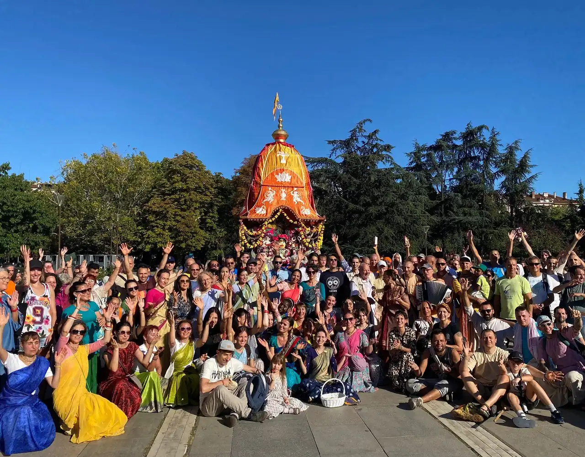
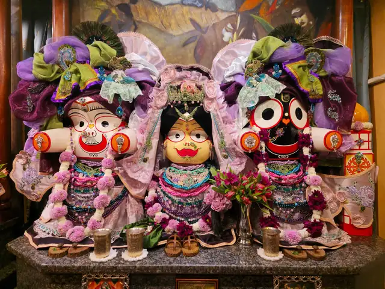
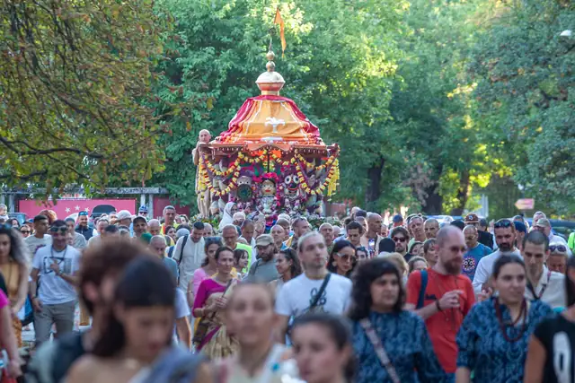
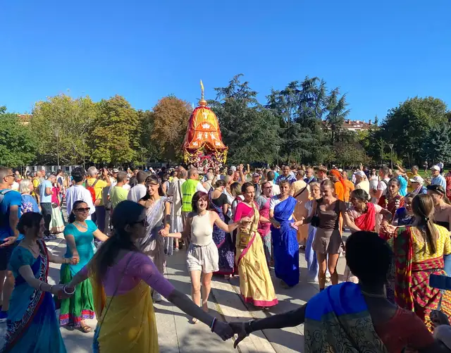
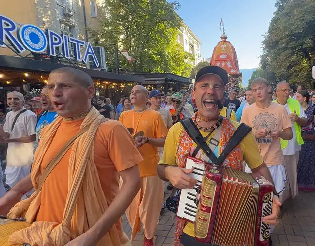
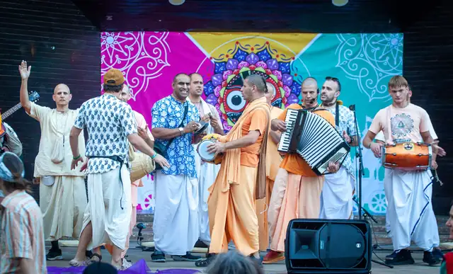
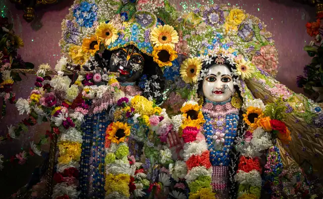
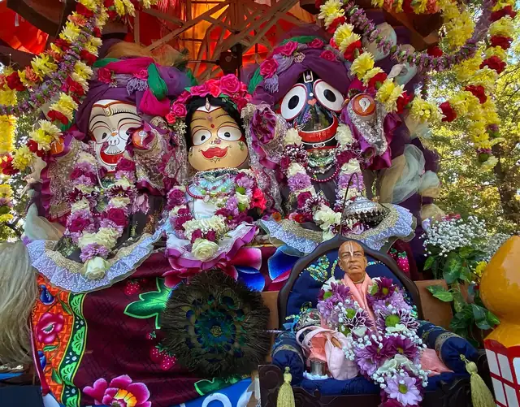

Добре дошли
Общество за Кришна съзнание в България. Вероизповедание от традицията на Гаудия ваишнавизма, с храм в София.
Ратха ятра в София, 30-ти юбилеен фестивал, 21 септември 2025
Кои сме
Едно вероизповедание
Обществото за Кришна съзнание е българското вероизповедание на Международното общество за Кришна съзнание (ИСКОН), духовно движение, основано през 1966 г. в Ню Йорк от Бхактиведанта Свами Прабхупада.
В България изповеданието присъства от 1991 г. и е регистрирано вероизповедание, самостоятелно юридическо лице.
В какво вярваме
- Бог е личност. Абсолютната Истина в крайна сметка е личност, изпълнена с любов, а не безлична сила.
- Душата е вечна. Истинското „аз“ не загива със смъртта на тялото.
- Бхакти: пътят на предаността. Любящото служене на Бога е същината на духовния живот.
Какво ще преживеете в храма
Киртан, съвместно пеене с традиционни инструменти, лекции и класове. Клас по Шримад Бхагаватам има всеки ден в 8:00.
Прасадам е вегетарианска храна, приготвена с грижа и предложена най-напред на Бога.
Лекциите, класовете и съботните програми са открити за гости.
Програма
| Кога | Какво |
|---|---|
| Всеки ден, 7:30 до 9:00 | Храмът е отворен |
| Всеки ден, 8:00 | Клас по Шримад Бхагаватам |
| Понеделник до петък и неделя, 18:00 до 18:30 | Храмът е отворен |
| Събота, 15:30 до 20:00 | Храмът е отворен |
| Събота, 15:30 до 19:30 | Празнична програма |
Ратха ятра в България
Празникът с колесница се провежда в България от 1996 г. 31-вият фестивал е на 23.08.2026 на Лятната сцена в парк „Борисова градина“, в София.

От нашата общност






Книгите на Шрила Прабхупада на български
А. Ч. Бхактиведанта Свами Прабхупада
Бхагавад-гита каквато е
Най-известният и почитан духовен текст на Индия: разговорът между Кришна и Арджуна, с пълен санскритски текст, превод и подробен коментар на Шрила Прабхупада. Основополагащо четиво за всеки, който се интересува от ведическата мъдрост.
Шримад Бхагаватам
„Зрелият плод на ведическото дърво на знанието.“ Многотомно издание с превод и коментар, разкриващо науката за Бога и пътя на чистата преданост.
Шри Чайтаня-чаритамрита
Житието и ученията на Шри Чайтаня Махапрабху, най-пълният богословски труд на традицията Гаудия ваишнавизъм.
Кришна: Върховната Божествена Личност
Разказите за деянията на Кришна, предадени достъпно и увлекателно: обобщение на Десета песен на Шримад Бхагаватам.
Нектарът на предаността
Наука за същината на бхакти: как да развием чиста любяща преданост към Бога. Изложение на класическия труд на Рупа Госвами.
Нектарът на наставленията
Кратко, но дълбоко ръководство за духовния живот в единайсет стиха с коментар, практическа основа на предаността.
Още заглавия
Шри Ишопанишад
Една от най-важните Упанишади: знанието, което ни доближава до Върховния Бог, с превод и коментар.
Науката за себепознанието
Сборник от есета и разговори, които представят основите на Кришна съзнание за съвременния читател, отлично въведение.
Пътуване към себеоткриването
Достъпни беседи за душата, съзнанието и духовния път, за всеки, който прави първите си стъпки.
Лесно пътуване до други планети
За духовната природа на съзнанието и възможността то да се издигне отвъд материалния свят.
Отвъд раждането и смъртта
Какво се случва след смъртта? Ясно изложение за душата, прераждането и пътя към освобождение.
Съвършени въпроси, съвършени отговори
Разговор между Шрила Прабхупада и млад търсещ, живо въведение в духовните въпроси на живота.
Учението на Бог Чайтаня
Същината на ученията на Шри Чайтаня Махапрабху: основата на пътя на санкиртана.
По-висшият вкус
За вегетарианството и духовната кухня, с рецепти за прасадам, храна, предложена на Бога.
Раджа-видя: Царят на знанието
За най-висшето и същевременно най-радостно знание: пътя на предаността, „царят на знанието“.
Възпявай и бъди щастлив
За силата на маха-мантрата Харе Кришна и практиката на медитация чрез възпяване на светите имена.
Как да поръчате: пишете ни на info@krishnabg.com или се обадете на 02 961 60 50.
Въпроси и отговори
Кришна съзнание религия ли е, или начин на живот?
И двете. Кришна съзнание е пълноценно монотеистично вероизповедание със свое богословие, практика и свещени текстове, което същевременно се изразява в цялостен начин на живот.
Трябва ли да съм индиец или да приема индийската култура?
Не. Изповеданието е открито за всеки човек, независимо от произход. То не изисква приемане на чужда култура, а съживяване на вродената връзка на душата с Бога.
В колко богове вярвате?
В един. Признаваме един-единствен Върховен Бог, който има безброй имена и форми. „Кришна“ е едно от имената Му, означаващо „всепривличащият“.
Мога ли да посетя център, без да съм член?
Разбира се. Лекциите, класовете и съботните програми са открити за гости. Заповядайте, за да се запознаете отблизо с традицията.
Какво е прасадам?
Вегетарианска храна, приготвена с грижа и предложена най-напред на Бога. Споделянето ѝ е сред най-обичаните дейности на общността.
Защо разпространявате книги?
Книгите на Шрила Прабхупада предават знанието от първоизточника. Тяхното издаване и споделяне е една от седемте цели на изповеданието.
Храмът и контакти
София
| Адрес | гр. София, кв. „Малинова долина“, бул. „Климент Охридски“ 119 |
|---|---|
| Телефон | 02 961 60 50 |
| Имейл | info@krishnabg.com |
| Часове | Всеки ден 7:30 до 9:00. Понеделник до петък и неделя 18:00 до 18:30. Събота 15:30 до 20:00. |
Бургас
Данни за контакт: в процес на допълване.